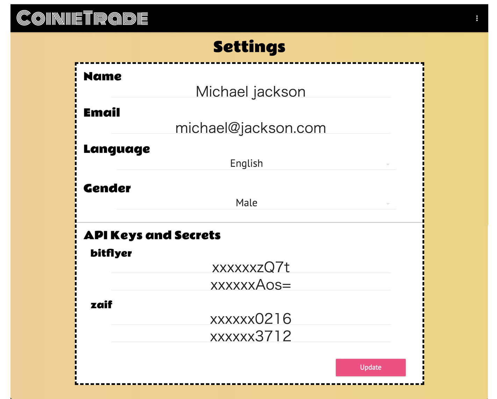
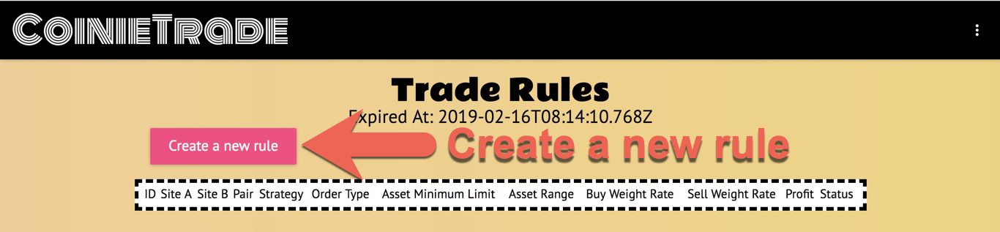
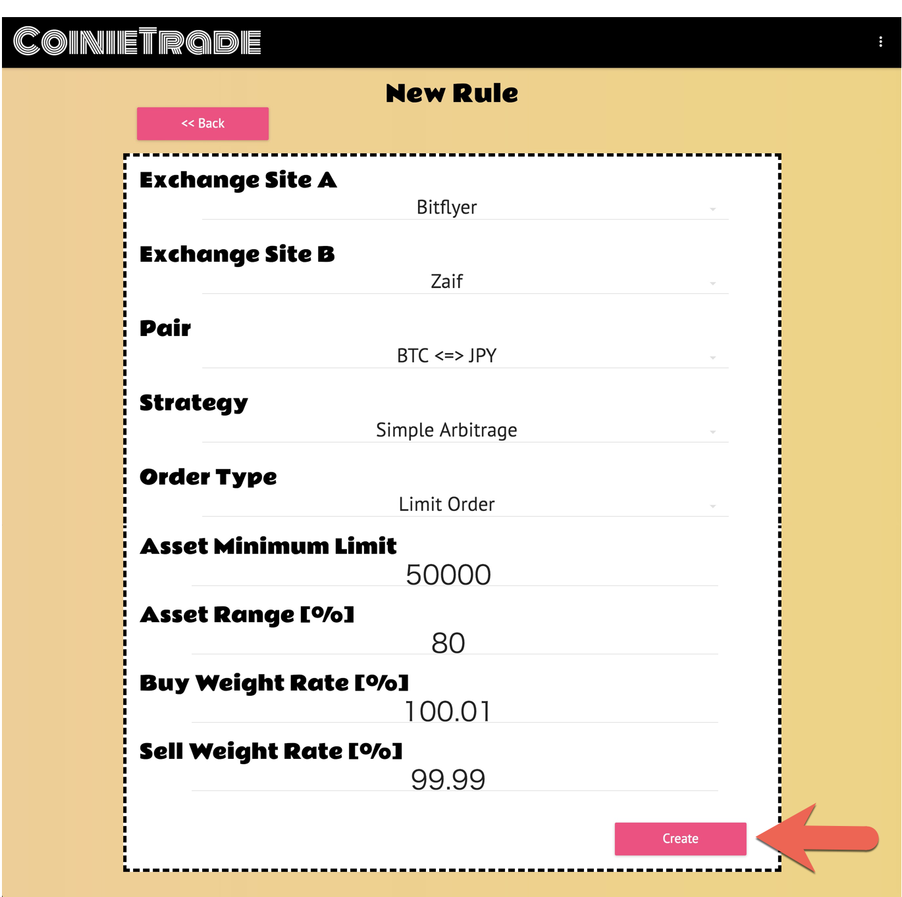
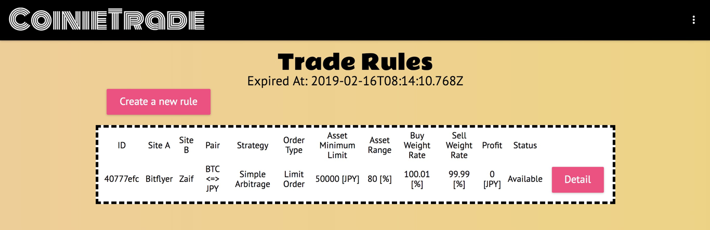
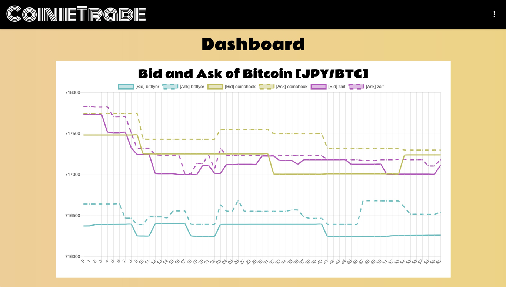

Getting Started
#1 Create accounts of exchange sites
Create at least 2 accounts in supported exchange sites.
#2 Prepare Bitcoins and money in the exchange sites for a Bitcoin arbitrage
Prepare both Bitcoins and money in the ratio of 50% and 50% in each exchange site you created. For example, deposit $2000 and buy Bitcoins that has a value of $1000 in each exchange sites. In the result, there are $1000 and Bitcoins that has a value of $1000 in each of them.
#3 Issue API Keys and Secrets for exchange sites
Issue keys and secrets for public apis of each exchange site in accordance with each instruction. You will use them to automate a Bitcoin trade afterwards.
#4 Agree this site's privacy policy and terms of sevice
Read the privacy policy and terms of service and Agree all. If you have any quiestions, FAQ is useful.
#5 Sign up to this site
Go to CoinieTrade, and sign up.
You can use a facebook account or a google account to sign up.
#6 Set infomation in Settings menu
Select a Settings menu. Enter every personal information and enter at least 2 API keys and secrets then click the update button.

#7 Create trade rules in Trade Rules menu
Select a Trade Rules menu. Click the create a new rule button.

Fill in the following information.
- Exchange Site A: One of exchange sites you'd like to compare
- Exchange Site B: The other one
- Pair: The combination of cryptocurrency and real currency
- Strategy: The strategy to trade or arbitrage.
- Order Type: Limit order or market order.
- Asset Minimum Limit: The amount of real currency in the exchange sites that you wouldn't like to trade or arbitrage.
- Asset Range: The percentage of real currency in the exchange sites that you'd like to trade or arbitrage except 'Asset Minimum Limit'.
- Buy Weight Rate: The percentage that multiply the buy price. A few high price tends to contract easily.
- Sell Weight Rate: The percentage that multiply the sell price. A few low price tends to contract easily.
Then, click the create button.

New rule is added. If you'd like to see the rule in detail or delete the rule, click the detail button.

#8 Just wait to get a profit margin
The trade rules are applied at 10 minitus intervals so far. (If the number of users increase, the interval will be extended.) Then, if the executed trade rules meet the condition of the aribitrage you selected, you can get a profit margin automatically.
#9 Other features
You can check Bitcoin rates among exchange sites.

You can check meetup events to learn Bitcoin near your location.